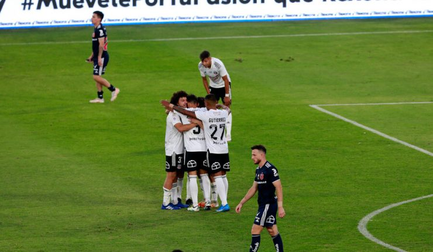

Superclásico: Colo Colo venció a la U y estiró su invicto en el Monumental
(Agencia UNO) – Colo Colo se hizo este domingo del liderato del Campeonato Nacional 2021 al superar en su reducto y por la cuenta mínima a Universidad de Chile, en el Superclásico disputado en el Estadio Monumental y válido por la quinta fecha del torneo.
Un resultado que le permite al equipo que dirige Gustavo Quinteros llegar a 10 unidades, sacándole uno a sus más cercanos perseguidores, Universidad Católica y O’Higgins. Sólo podría perder la punta si Audax Italiano (8) derrota este lunes a Deportes Melipilla en Rancagua.
En tanto, el cuadro que adiestra Rafael Dudamel sufrió su primera derrota en el certamen y se estacionó en el undécimo puesto de la tabla con cinco puntos.
El encuentro comenzó con bastante intensidad en el Monumental, pero sin la profundidad para generarse ocasiones en los pórticos. Muy trabado el partido en la mitad de la cancha y muy interrumpido por constantes faltas.
Al Cacique le costó generar ocasiones y la U se vio levemente mejor, principalmente al administrar mejor el control de la esférica. La técnica quedaba en un completo segundo plano en relación al empuje.
La primera incidencia del encuentro arribó a los 23 minutos con un enganche de Gabriel Costa dentro del área y la pelota le dio supuestamente en el brazo de Camilo Moya. Todos los albos saltaron a reclamar, por lo que Julio Bascuñán fue a ver la acción en el VAR. Finalmente, el juez cobró una falta previa de Costa sobre Ramón Arias.

Lo más claro de ambos equipos en la etapa inicia llegó sobre el final. El elenco colegial avisó primero a los 44’ con un cabezazo de Ángelo Henríquez en el área, tras centro desde la izquierda de Diego Carrasco, que encontró la buena reacción del meta Brayan Cortés.
Luego, a los 45+2 minutos, lo tuvo el local. Tiro de esquina desde la izquierda y por arriba ganó el central Maximiliano Falcón, que sacó un frentazo que dio en el travesaño de un vencido Fernando De Paul.
En el complemento, el choque de fuerzas fue parejo. El primero en avisar a fondo fue la visita a los 56’ con una interesante internada de Nahuel Luján que terminó con un remate cruzado elevado.
Finalmente, el elenco popular sería el encargado de romper el cero en Pedrero. Centro desde la derecha de Marcos Bolados, controló Costa dentro del área y se la bajó a Leonardo Gil, quien con un zurdazo cruzado a los 71’ dejó estático al golero De Paul.
Ya en los descuentos, a los 90+1 minutos, el local se quedaría con un hombre menos en el campo por expulsión de Gabriel Suazo, tras ir con el codo contra Gonzalo Espinoza.
Los azules no derrotan a Colo Colo desde el 5 de mayo de 2013 cuando ganaron por 3-2 en el Nacional. En el Monumental, en tanto, la U ya llega a dos décadas sin vencer al Cacique. Celebró por última vez el 9 de septiembre de 2001.